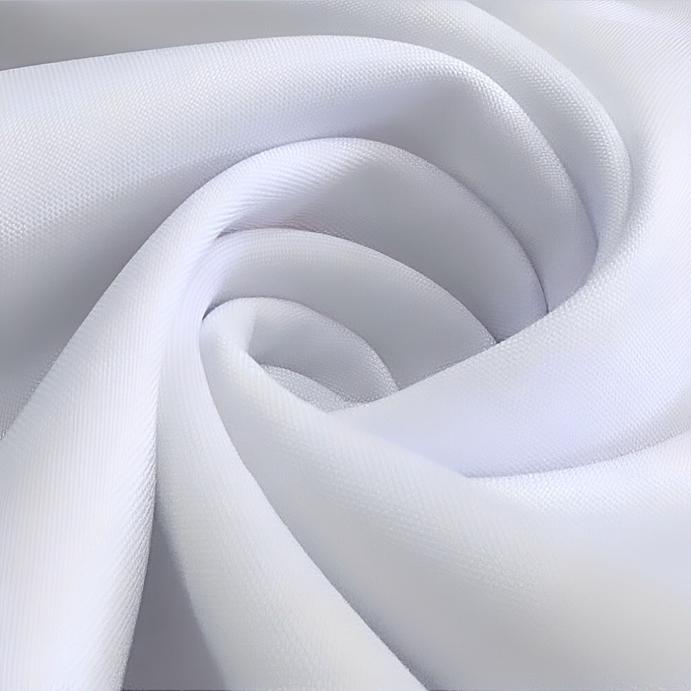

TECIDOS DE ALTA TECNOLOGIA PARA CAMISETAS QUE EXIGEM O MELHOR
TECIDOS DE ALTA TECNOLOGIA PARA CAMISETAS QUE EXIGEM O MELHOR
Conforto, Durabilidade e Inovação em Cada Fio
Conforto, Durabilidade e Inovação em Cada Fio
O FUTURO DOS TECIDOS ESTÁ AQUI
Na Basics, desenvolvemos tecidos que combinam tecnologia avançada com conforto extremo.
Nossos materiais são projetados para oferecer resistência a amassados, eliminação de odores e manutenção da forma, garantindo que cada peça permaneça impecável mesmo após múltiplos usos.

ANTI AMASSAMENTO
Nosso tecido anti amassamento garante que suas camisetas estejam sempre prontas para uso, direto da mala ou do guarda-roupa.
TECNOLOGIA ANTIODOR
Com tecnologia que elimina odores, nossas camisetas permanecem frescas, mesmo após horas de uso intenso.
DURABILIDADE EXTREMA
Projetado para resistir ao desgaste, mantendo a aparência e o toque suave mesmo após lavagens frequentes.
FÁCIL DE CUIDAR
Nossos tecidos requerem pouca manutenção, mantendo sua qualidade sem necessidade de cuidados especiais.
MARCAS QUE CONFIAM NO NOSSO TRABALHO
